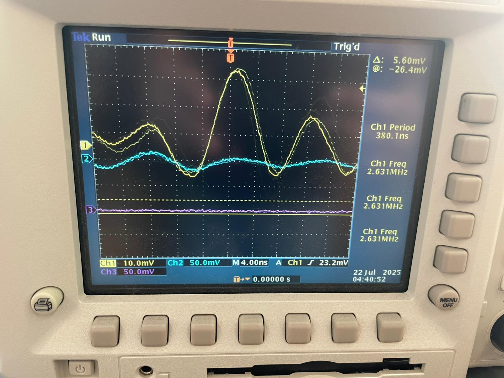

THE Mini Arcade game -MVP
This week we were tasked with creating an MVP
The MVP is a minaturised version of your final project.At first I had decided to do a folding clothes prject but due to several dificulties and a slip (literally)I was unable to complete my project in time .There fore I decided to go ahead and do the next best thing create a mini arcade game for you to play ping pong with. This was the very first idea that I had presented and was happy with the way it turned out .

Mistakes not Make Again/Why not use Arduino UNO
- Slow
- Does not have Wifi or Bluetooth
- Will cause pain and misery for hours .
Here is how I went on about with it :
First I took an oled screen two buttons my trusted XIAO or ESP32C3 several pin to pin wires and began.I went through several tutorials on the curcuit diagram .Connecting the SCL and SDA were the most important as well as tiring part of my project .I got my project up and running in just 4 hours .The code was mighty exhaustive the insurmountable mountain I was unable to climb

Now came the one part which most of us I assume or atleast I struggle with that is the coding part .Therefor I did the hardwork so you can see the code.Here it is in its entirety:
#include
#include
#define SCREEN_WIDTH 128
#define SCREEN_HEIGHT 64
#define OLED_RESET -1
Adafruit_SSD1306 display(SCREEN_WIDTH, SCREEN_HEIGHT, &Wire, OLED_RESET);
// Game elements
int ballX = 64, ballY = 32;
int ballSpeedX = 1, ballSpeedY = 1;
int paddleHeight = 20;
int paddleWidth = 3;
int player1Y = 32, player2Y = 32; // Paddle positions
// Button pins (change these to your actual pin numbers)
#define PLAYER1_UP_BUTTON 4
#define PLAYER1_DOWN_BUTTON 3
#define PLAYER2_UP_BUTTON 3
#define PLAYER2_DOWN_BUTTON 4
void setup() {
Serial.begin(9600);
// Initialize buttons
pinMode(PLAYER1_UP_BUTTON, INPUT_PULLUP);
pinMode(PLAYER1_DOWN_BUTTON, INPUT_PULLUP);
pinMode(PLAYER2_UP_BUTTON, INPUT_PULLUP);
pinMode(PLAYER2_DOWN_BUTTON, INPUT_PULLUP);
// Initialize OLED
if(!display.begin(SSD1306_SWITCHCAPVCC, 0x3C)) {
Serial.println(F("SSD1306 allocation failed"));
while(1);
}
display.clearDisplay();
display.display();
}
void loop() {
display.clearDisplay();
// 1. Move ball
ballX += ballSpeedX;
ballY += ballSpeedY;
// 2. Ball collision with top/bottom
if(ballY <= 0 || ballY >= SCREEN_HEIGHT-1) {
ballSpeedY = -ballSpeedY;
}
// 3. Ball collision with paddles
if(ballX <= paddleWidth && abs(ballY - player1Y) < paddleHeight/2) {
ballSpeedX = -ballSpeedX;
}
if(ballX >= SCREEN_WIDTH-paddleWidth-1 && abs(ballY - player2Y) < paddleHeight/2) {
ballSpeedX = -ballSpeedX;
}
// 4. Reset ball if out of bounds
if(ballX < 0 || ballX > SCREEN_WIDTH) {
ballX = SCREEN_WIDTH/2;
ballY = random(10, SCREEN_HEIGHT-10); // Random respawn
}
// 5. Button controls for paddles
if(digitalRead(PLAYER1_UP_BUTTON) == LOW && player1Y > paddleHeight/2) {
player1Y -= 2; // Move left paddle up
}
if(digitalRead(PLAYER1_DOWN_BUTTON) == LOW && player1Y < SCREEN_HEIGHT-paddleHeight/2) {
player1Y += 2; // Move left paddle down
}
if(digitalRead(PLAYER2_UP_BUTTON) == LOW && player2Y > paddleHeight/2) {
player2Y -= 2; // Move right paddle up
}
if(digitalRead(PLAYER2_DOWN_BUTTON) == LOW && player2Y < SCREEN_HEIGHT-paddleHeight/2) {
player2Y += 2; // Move right paddle down
}
// 6. Draw everything
display.drawRect(0, 0, SCREEN_WIDTH, SCREEN_HEIGHT, SSD1306_WHITE); // Border
display.fillRect(0, player1Y-paddleHeight/2, paddleWidth, paddleHeight, SSD1306_WHITE); // Left paddle
display.fillRect(SCREEN_WIDTH-paddleWidth, player2Y-paddleHeight/2, paddleWidth, paddleHeight, SSD1306_WHITE); // Right paddle
display.fillCircle(ballX, ballY, 2, SSD1306_WHITE); // Ball
display.display();
delay(0); // Game speed
}
But that wasnt the end of it .I had the great idea of experimenting with Arduino Uno .Which i learnt to be not so great of a chip compared to the XIAO .As Booby listed previously .But it did work as visible in the images listed above and video down here .
Now for the second part of this Project I had to Use an oscilloscope to discover the time domain at which my output device is operating. Is it on a fixed clock? What's its speed? Share images and describe your findings  Here as displayed on the oscilloscope